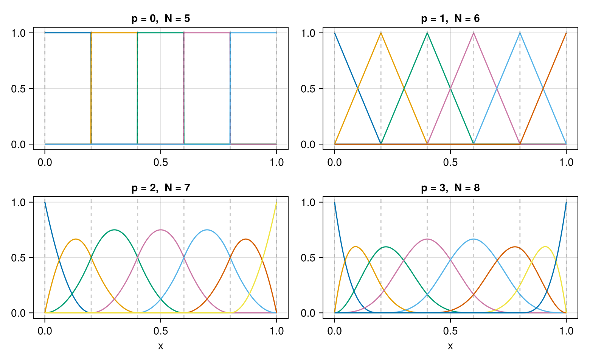
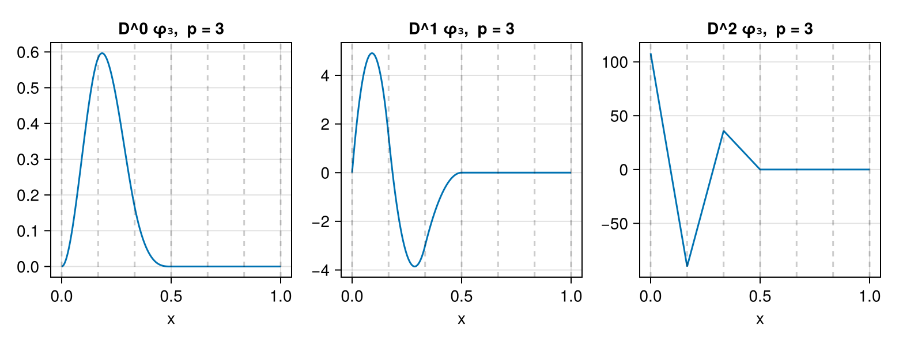

B-Splines
What a B-spline basis is, how this package computes it, and which of its properties the rest of the manual leans on. The standard references are de Boor [1] and Schumaker [2]; Piegl and Tiller [3] is the geometric-modelling counterpart, and Höllig [4] and Cottrell, Hughes and Bazilevs [5] treat the finite-element setting this package is written for.
using SimpleSplines
using CairoMakie
using LinearAlgebraThe spline space
Fix a closed interval $\Omega = [a,b]$ and a subdivision of it into $n$ cells by breakpoints
\[a = y_1 < y_2 < \dots < y_{n+1} = b .\]
The spline space of degree $p$ on that subdivision is
\[\mathcal{S}^p = \left\{ u \in \mathcal{C}^{p-1}(\Omega) : u \big\vert_{[y_k, y_{k+1}]} \in \mathbb{P}_p \ \text{ for } k = 1, \dots, n \right\} ,\]
the piecewise polynomials of degree $p$ that are $p-1$ times continuously differentiable across every interior breakpoint. Counting: $n(p+1)$ coefficients, less $p$ continuity conditions at each of the $n-1$ interior breakpoints, leaves
\[\dim \mathcal{S}^p = n(p+1) - (n-1)p = n + p .\]
That is the dimension the clamped basis realises. The other two closures in this package change the space rather than the basis, and change the count with it — see Dimension counting below.
Knot vectors
A B-spline basis is not built from the breakpoints directly but from a knot vector, a non-decreasing sequence in which a value may repeat. Multiplicity is what encodes reduced continuity: a knot of multiplicity $\mu$ drops the smoothness there to $\mathcal{C}^{p-\mu}$.
The clamped (or open) knot vector repeats each end knot $p+1$ times,
\[\big[\, \underbrace{a, \dots, a}_{p+1},\ y_2, \dots, y_n,\ \underbrace{b, \dots, b}_{p+1} \,\big] ,\]
of length $n + 2p + 1$. The continuity at the two ends is thereby $\mathcal{C}^{-1}$, which is what lets a basis function be nonzero at the endpoint at all; inside, every knot is simple and the space is $\mathcal{C}^{p-1}$ as it should be.
b = BSplineBasis(UniformMesh(5, 0 .. 1), 2)
knotvector(b)10-element Vector{Float64}:
0.0
0.0
0.0
0.2
0.4
0.6
0.8
1.0
1.0
1.0The periodic closure does something different. The right endpoint is dropped — $y_{n+1} \equiv y_1$ on a torus — and the remaining breakpoints are continued periodically, $y_{i+n} = y_i + L$ with $L = b - a$, so that the recursion runs on a bi-infinite sequence with no repeated knots anywhere. The resulting splines satisfy $\phi_{j+n}(x) = \phi_j(x - L)$, so only $n$ of them are distinct on $\Omega$, and the periodic basis is their wrapping onto the torus,
\[\phi_j \big\vert_\Omega (x) = \sum_{r \in \mathbb{Z}} \phi_j(x + rL) , \qquad 1 \le j \le n ,\]
a finite sum since each $\phi_j$ is supported on $p+1$ cells. In practice five periodic images of the breakpoints are stored, which is what keeps every index the recursion reaches inside the array:
c = BSplineBasis(UniformMesh(5, 0 .. 1), 2, Periodic())
knotvector(c)25-element Vector{Float64}:
-2.0
-1.8
-1.6
-1.4
-1.2
-1.0
-0.8
-0.6
-0.4
-0.19999999999999996
⋮
1.2
1.4
1.6
1.8
2.0
2.2
2.4
2.6
2.8The Cox-de Boor recursion
Given a knot vector $(x_j)$, the B-splines of degree $0$ are the indicators of the knot spans and those of degree $p$ are built from those of degree $p-1$ [6], [7]:
\[\phi_j^0 = \mathbb{1}_{[x_j, x_{j+1})} , \qquad \phi_j^p = w_j^p \, \phi_j^{p-1} + \left(1 - w_{j+1}^p\right) \phi_{j+1}^{p-1} , \qquad w_j^p = \frac{x - x_j}{x_{j+p} - x_j} .\]
A knot span of zero length contributes nothing, which is what makes the recursion well defined at a repeated knot: the guard is on the span being positive, since it is the division and not the numerator that fails.
Raising the degree by one widens the support by one span and adds one order of smoothness. The four degrees on one mesh:
fig = Figure(size = (780, 480))
xs = range(0, 1; length = 801)
for (i, p) in enumerate(0:3)
ax = Axis(fig[(i - 1) ÷ 2 + 1, (i - 1) % 2 + 1];
title = "p = $(p), N = $(nbasis(BSplineBasis(UniformMesh(5, 0 .. 1), p)))",
xlabel = i > 2 ? "x" : "")
bp = BSplineBasis(UniformMesh(5, 0 .. 1), p)
for j in eachindex(bp)
lines!(ax, xs, bp[xs, j])
end
vlines!(ax, breakpoints(bp); color = (:black, 0.2), linestyle = :dash)
end
fig
SimpleSplines computes single values from the recursion exactly as written — see the internal _bspline, which the test suite uses as the reference — and the whole local block by de Boor's triangular scheme, which is $O(p^2)$ for all $p+1$ nonzero functions together rather than per function. evaluate is the first path, evaluate_all! the second.
Properties
Four properties, each of which something in this package relies on.
Local support. $\phi_j^p$ is supported on $[x_j, x_{j+p+1}]$, which is $p+1$ consecutive cells. So at most $p+1$ basis functions are nonzero at any point, at most $2p+1$ functions overlap any given one, and every assembled matrix is banded with half-bandwidth $p$. This is the property that makes the whole package cheap: the tabulation is sparse, the mass matrix is banded, and a particle deposition costs $O(p^2)$ rather than $O(N)$.
b3 = BSplineBasis(UniformMesh(8, 0 .. 1), 3)
count(j -> abs(b3[0.3, j]) > 0, eachindex(b3)), local_width(b3)(4, 4)Non-negativity. $\phi_j^p \ge 0$ everywhere. Together with the next property this makes a spline with non-negative coefficients non-negative, which is why a projected distribution function stays a distribution function on a clamped or periodic basis.
Partition of unity. $\sum_j \phi_j^p \equiv 1$ on $\Omega$. This is what makes the constants lie in the span, hence $\int_\Omega u_h = \mathbf{1}^{\mathsf T} \mathbb{M} \hat{u}$ and basis_integrals== mass_matrix(q) * ones(N).
maximum(abs, [sum(b3[x, :]) - 1 for x in range(0, 1; length = 401)])2.220446049250313e-16Smoothness. $\phi_j^p \in \mathcal{C}^{p-1}$ across an interior breakpoint, and no better: the $p$-th derivative jumps. Both halves matter — the first is why a $\mathcal{C}^2$ cubic basis can carry a third-order operator after one integration by parts, the second is why it cannot carry one without.
b4 = BSplineBasis(UniformMesh(6, 0 .. 1), 3)
y = breakpoints(b4)[3]
ε = 1e-7
[(d, abs(evaluate(b4, 3, y - ε, d) - evaluate(b4, 3, y + ε, d))) for d in 0:3]4-element Vector{Tuple{Int64, Float64}}:
(0, 5.999999999894978e-7)
(1, 7.199995139650639e-6)
(2, 5.3999999998666226e-5)
(3, 972.0)For $d \le 2$ the difference across the breakpoint is proportional to $\varepsilon$, which is what a continuous derivative probed at $y \pm \varepsilon$ gives; at $d = 3$ it is $O(1)$, and that is the jump.
fig = Figure(size = (780, 300))
xs2 = range(0, 1; length = 1201)
for d in 0:2
ax = Axis(fig[1, d + 1]; xlabel = "x", title = "D^$(d) φ₃, p = 3")
lines!(ax, xs2, [evaluate(b4, 3, x, d) for x in xs2])
vlines!(ax, breakpoints(b4); color = (:black, 0.2), linestyle = :dash)
end
fig
Dimension counting
The number of degrees of freedom is a property of the closure, not of the degree alone. nbasis reports it.
| basis | $N$ | why |
|---|---|---|
BSplineBasis | $n + p$ | the dimension of $\mathcal{S}^p$ computed above |
PeriodicBSplineBasis | $n$ | on a torus there are only $n$ breakpoints and no clamping, so the $p$ extra functions of the bounded case are the ones the clamping introduced; the wrap identifies them in pairs |
RecombinedBSplineBasis | $n + p - \#\{\text{constrained ends}\}$ | each homogeneous condition is one linear functional on $\mathcal{S}^p$, hence one dimension, whatever the order of the derivative it involves |
m = UniformMesh(8, 0 .. 1)
[(bc, nbasis(BSplineBasis(m, 3, bc)))
for bc in (Free(), Periodic(), Dirichlet(), Neumann(), Natural(),
(Dirichlet(), Free()))]6-element Vector{Tuple{Any, Int64}}:
(Free(), 11)
(Periodic(), 8)
(Dirichlet(), 9)
(Neumann(), 9)
(Natural(), 9)
((Dirichlet(), Free()), 10)A periodic basis also needs $n > p$: a basis function spans $p+1$ cells, so with $n \le p$ it would wrap onto itself and the sum over periodic images would not terminate. The clamped basis has no such requirement — a single cell carries the whole of $\mathbb{P}_p$.
Derivatives
Differentiating the recursion once gives a recursion of its own,
\[\frac{\mathrm{d}}{\mathrm{d}x} \phi_j^p = p \left( \frac{\phi_j^{p-1}}{x_{j+p} - x_j} - \frac{\phi_{j+1}^{p-1}}{x_{j+p+1} - x_{j+1}} \right) ,\]
so the derivative of a degree-$p$ B-spline is a difference of two degree-$(p-1)$ B-splines. Iterating, $D^d \phi_j^p$ is a combination of $d+1$ B-splines of degree $p-d$, and for $d > p$ it vanishes identically.
Two consequences worth stating plainly:
- Any derivative order is available, as the fourth positional argument of
evaluate. This is not the same as stacking lazyDerivativeproducts:b'gives aBSplineDerivative, which is first order only and does not compose, whereasevaluate(b, j, x, 3)is the third derivative directly. A third-order operator needs the latter. - $d > p$ returns zero rather than an error. The $p$-th derivative of a degree-$p$ spline is piecewise constant and everything above it is zero, so a loop over derivative orders needs no special case.
b1 = BSplineBasis(UniformMesh(4, 0 .. 1), 1)
[evaluate(b1, 2, 0.3, d) for d in 0:3]4-element Vector{Float64}:
0.8
-4.0
0.0
0.0Internally, evaluate_all! does not apply the derivative recursion to a finished block. It runs de Boor's scheme at degree $q = p - d$ — cheaper, since the block is smaller — and then lifts the result to degree $p$ by applying the recursion above $d$ times, the block growing by one function at each step. The two routes agree to round-off, and the test suite checks that at every degree and order.
Greville abscissae and polynomial reproduction
The natural interpolation points of a B-spline basis are the Greville abscissae, the averages of the $p$ interior knots of each function,
\[\xi_j = \frac{1}{p} \sum_{i=1}^{p} x_{j+i} .\]
Each $\xi_j$ lies in the support of $\phi_j$, and for the clamped basis the collocation matrix $\phi_j(\xi_i)$ is invertible — the Schoenberg-Whitney condition. nodes returns them, and ContinuumArrays' grid is the same thing.
nodes(BSplineBasis(UniformMesh(6, 0 .. 1), 3))9-element Vector{Float64}:
0.0
0.05555555555555555
0.16666666666666666
0.3333333333333333
0.5
0.6666666666666666
0.8333333333333334
0.9444444444444445
1.0bd = BSplineBasis(UniformMesh(6, 0 .. 1), 3)
C = [evaluate(bd, j, ξ) for ξ in nodes(bd), j in eachindex(bd)]
cond(C)3.486174045381553A separate question is which polynomials lie in the span. polynomial_reproduction answers it with a number, and the answer is not always $p$: the periodic closure keeps only the constants, because $x$ is not periodic, and a Dirichlet-recombined basis keeps nothing at all, because every one of its functions vanishes at the ends. This decides which moments an $L^2$ projection preserves, so it is not a matter of taste — see Boundary Conditions.
Two conventions to know
Cells are half-open, except the last. $\phi^0_j$ is the indicator of $[x_j, x_{j+1})$, which makes every B-spline right-continuous and makes the partition of unity hold on $[a,b)$ but fail at $b$, where every indicator is false. That would be the wrong answer for a clamped basis, which is meant to be interpolatory at both ends. The topmost span is therefore closed on the right, and only there: the value at $b$ is exactly the limit from the left, and $\phi_N(b) = 1$.
bc3 = BSplineBasis(UniformMesh(4, 0 .. 1), 3)
sum(bc3[1.0, :]), bc3[1.0, nbasis(bc3)](1.0, 1.0)Outside the domain, a bounded basis evaluates to zero. Not an error, and not an extrapolated polynomial — zero, which is the mathematically correct value of a compactly supported function. This is deliberate, and it is the behaviour a particle method wants: a particle that leaves the domain stops contributing. It is also a trap worth knowing, since nothing is raised.
evaluate(bc3, degree(bc3) + 1, -0.5), sum(bc3[1.5, :])(0.0, 0.0)A PeriodicBSplineBasis is different: any real argument is accepted and reduced onto the domain first, so the result is the periodic extension and no point is ever outside.
cp = BSplineBasis(UniformMesh(8, 0 .. 1), 3, Periodic())
evaluate(cp, 3, 0.4), evaluate(cp, 3, 0.4 + 5.0), sum(cp[7.3, :])(0.28266666666666684, 0.28266666666666845, 1.0000000000000002)Cost
| operation | cost |
|---|---|
one basis function at a point, evaluate | $O(2^p)$ — the recursion as written, unmemoised |
all nonzero functions at a point, evaluate_all! | $O(p^2)$ for the whole block, no allocation |
a spline at a point, evaluate(b, û, x) | $O(p^2)$, not $O(N)$ — it goes through the block |
assembling $\int f D^a\phi_k D^b\phi_l$, weighted_matrix | $O(N p^2 n_q)$ on the sparse tabulation, against $O(N^2 n n_q)$ on a dense one |
| a mass solve | $O(N \log N)$ circulant, $O(Np)$ banded |
The first row is worth dwelling on, because it is a deliberate choice and not an oversight. evaluate runs the Cox-de Boor recursion literally, splitting into two subproblems at every level with no memoisation, so that the assembly built on it doubles as a check of the formula. That costs $O(2^p)$ per value. evaluate_all! uses de Boor's triangular scheme, which is $O(p^2)$ for all $p+1$ functions together — so the block form is not merely p+1 times cheaper, it has a different exponent:
| $p$ | evaluate, one function | evaluate_all, the whole block | ratio |
|---|---|---|---|
| 3 | 26 ns | 21 ns | 1.3 |
| 6 | 241 ns | 39 ns | 6.1 |
| 8 | 963 ns | 58 ns | 16.7 |
| 12 | 15.5 µs | 104 ns | 149 |
Absolute timings are a property of the machine; the exponents are not. Doubling the degree from $6$ to $12$ costs the single value 64 times more and the block 2.6 times more, which is $2^6$ against $(12/6)^2$. The measurement is archived as scripts/evaluate_cost_scaling.jl, which fails if the two stop being distinguishable.
At the cubics almost everything here uses the difference hardly matters; at $p = 12$ it is a factor of 150. Either way, a loop that wants every nonzero function at a point should ask for the block.